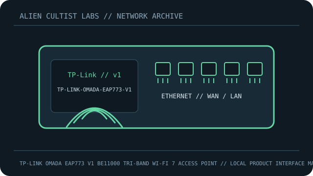

[ MODEL-SPECIFIC NETWORK HARDWARE RECORD ]
TP-Link Omada EAP773 V1 BE11000 Tri-Band Wi-Fi 7 Access Point
Ceiling Omada AP, hardware V1, with 10GbE uplink and Wi-Fi 7.

IDENTIFICATION: Confirm exact model, revision, regulatory region and product label. Link rates are manufacturer maximum PHY/link specifications, not measured payload throughput; features depend on firmware and client capability.
Model-specific specifications and compatibility
| Subcategory | Network appliances: routers & access points |
|---|---|
| Exact product/model | TP-Link Omada EAP773 V1 BE11000 Tri-Band Wi-Fi 7 Access Point |
| Ethernet ports and rates | One 10GbE RJ-45 Ethernet port (10/5/2.5/1Gb/s auto-negotiation); no second Ethernet port. |
| Wi-Fi bands and standards | 2.4GHz 2x2 up to 574Mb/s; 5GHz 2x2 up to 4324Mb/s; 6GHz 2x2 up to 5765Mb/s, Wi-Fi 7. |
| Streams and nominal-rate interpretation | Six streams total (2x2 per band); MLO/320MHz need capable clients, software and permitted region. |
| Antenna system | Integrated internal antennas: 2x4dBi at 2.4GHz, 2x5dBi at 5GHz and 2x5dBi at 6GHz for US V1; check regional datasheet. |
| Management, firmware and security updates | Standalone web or Omada SDN controller/cloud. V1 regional firmware/security updates; WPA3/controller support depend on mode/software. |
| Power | IEEE 802.3at PoE or 12V ⎓ 2.5A DC (adapter not included); max consumption 25.44W PoE or 22.57W DC. Verify regional V1 label. |
| Compatibility | 10G needs matching peer/cable. IEEE 802.11a/b/g/n/ac/ax/be legacy/client interoperability and Wi-Fi 7 features depend on radio configuration, controller/PoE budget and country code. |
| Revision / variant | Exact EAP773 hardware V1; not EAP783/EAP770 or later revision. |
Revision, management and deployment notes
Revision/variant: Exact EAP773 hardware V1; not EAP783/EAP770 or later revision.
Firmware/security updates: Standalone web or Omada SDN controller/cloud. V1 regional firmware/security updates; WPA3/controller support depend on mode/software.
Power: IEEE 802.3at PoE or 12V ⎓ 2.5A DC (adapter not included); max consumption 25.44W PoE or 22.57W DC. Verify regional V1 label.
Compatibility: 10G needs matching peer/cable. IEEE 802.11a/b/g/n/ac/ax/be legacy/client interoperability and Wi-Fi 7 features depend on radio configuration, controller/PoE budget and country code.
No throughput or range benchmark is claimed. For testing, record firmware, client, channel, topology and method.
Safety and preservation
Retain adapter/PoE labels and regional SKU, record firmware provenance and remove power before servicing. Do not publish credentials, serial numbers, MAC addresses or private network details.
Manufacturer sources and manuals
- TP-Link Omada product specificationsManufacturer specification source for the model.
- TP-Link EAP773 manufacturer datasheet (V1)Official manufacturer support, firmware, installation or manual resource.
- TP-Link Omada EAP773 support and firmwareOfficial support/download listing; verify V1 and region before firmware update.
Use exact model/revision and purchase-region documentation for firmware and regulatory decisions.